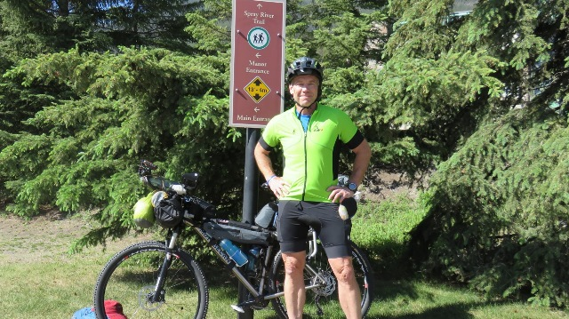
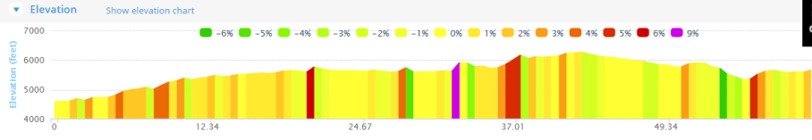
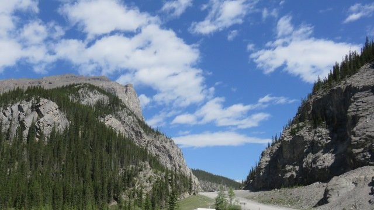
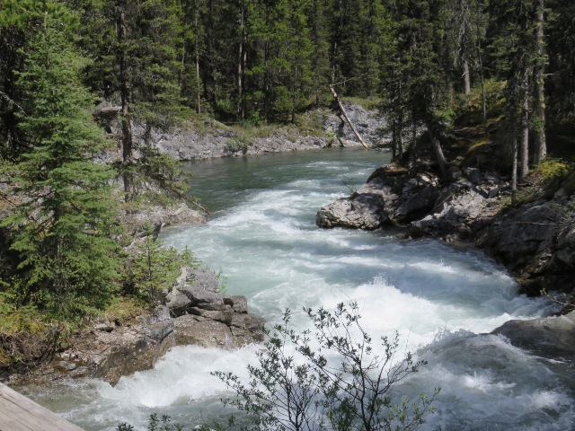
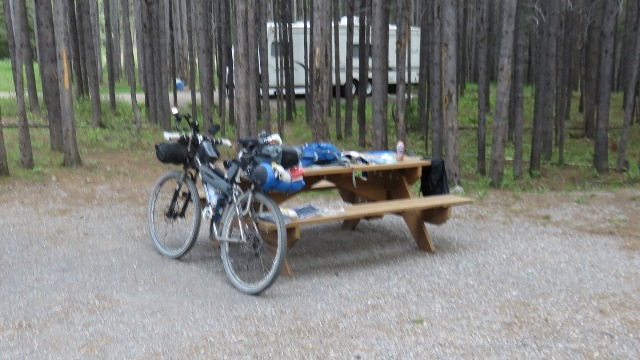

A Journey of a Thousand Miles begins with a single step
A Journey of Three Thousand Miles begins with a single pedal stroke
Leaving Banff was the easy part. Got my picture taken by a park ranger and got on the bike.

For some reason the electronic map I loaded from Topofusion didn’t have detail for the area right around Banff but the Spray River trail was easy to follow I didn't really need anything else. The map showed some detail about 35 miles later.
The First 40 miles
Once out of town the fun (and the walking) began. Probably walked five times in the first 12 miles. After two hours I had covered 12 miles. Some quick extrapolation and it appeared I was going to finish 2,700 miles in October.
Mornings are for going up

The first 40 miles was a gradual climb. I would learn this was the way of the world.
I struggled to
climb but figured I would adapt. Shoes and feet were holding up with the walking which was a good thing. I was
already thinking I had to cut some weight and the running shoes could go if I could walk in the Sidi bike
shoes.

In the afternoon I meet people coming north (NOBOs). I was a SOBO. Two very young guys from New Zealand who
were on their 35th and last day coming north and a woman who had ridden from the border (Roosville) to get to
the start of the race on Friday. These guys on their final day had covered about the same distance as I had
during the day which made me feel better.

This was about the time I was going to start going downhill so the day got better with the last 20 miles much easier than the first. I rolled into Bolton Creek campground about 6pm and realized the first rule of the Tour Divide (TD). You always go up at the end of the day. The office was lower than the shower which was lower than the actual camp spot.
The camp was being harassed by a grizzly so the only person not encased in a steel can would need to be careful. I guess grizzlies don’t know that $350,000 motor homes have a lot more food than a biker. So after a relatively good day I was presented with my first real issues.
• One of my "notube" tires was pretty flat,
• I was getting eaten by mosquitoes
• And when I had stopped to take a shower I had left my bike helmet by the bathroom.
I raced back to the office to get some Off spray, but when I went looking for my helmet it was gone. So now I was 100 miles from the nearest bike shop with flat tires and no helmet.
Somewhere along the way I sent out my first end of day message to my family. >"This is Jim and I am at the end of another amazing day on the Tour Divide"
Home for my first night on the trail

To go places and do things that I've never done before – that’s what living is all about. See full screen mapText by Jim O'Brien. Photographs by Jim O'Brien, see additional photos of the Tour Divide on Flickr.